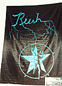

Rush Banners
|

"lightning bolts & star"
36" x 54"
Black banner with blue "Rush" written like on Hemispheres, with forks shooting
down like lightning. Blue man w/star is in the bottom right. NOTE: may not be
an official banner!
|

"man & star on black"
44" x 44"
Square black banner with white man & star, "Rush" written between them in
AFTK outline font.
|
"man & blue star on white"
44" x 44"
Square white banner of man and star. Star inside is dark blue, with outside
light blue, "Rush" is written between the two in red AFTK font.
|
"man & blue star on olive green"
21" x 21"
Square olive green banner of man and star. Star inside is blue, with
"Rush" written in red AFTK font and a white border.
|

"white band portrait on red"
39" x 54"
Red banner with portrait of the band from Hemispheres era in white outline.
"Rush" is written above in white Hemispheres script.
|

"signals album cover"
44.5" x 47"
Banner of the cover of Signals, with a white border.
|
"neil tama promo"
35" x 71"
This banner was given away when someone bought a Tama drum set back in 1983,
and is very rare. It's approximately door size, and has a picture of Neil
behind his drums, floating on a raft in the middle of a lake.
|
"grace under pressure video"
44" x 44"
White banner with color picture of a scene from "The Enemy Within" video.
"Rush" is written above in red script, with the "p/g" symbol below the
picture.
|
"hold your fire cover"
21" x 21"
Small banner of Hold Your Fire album cover, with "Rush" written around the
edges in HYF font. Sold only during the HYF tour at the concert.
|
"hold your fire european tour"
5" x 39"
Black banner with RUSH and European Tour written in yellow.
Print is on front and back of banner.
|

"skulls & bones"
14" x 14"
Small black banner with skulls and bones around the edges, "Rush" in the
middle. Sold only at Roll The Bones concerts.
|

"neil zildjian promo"
52" x 34"
Large vinyl banner of the Test For Echo Zildjian promo poster. "Neil Peart"
is across the top in yellow, "plays" is down the right side in yellow, and
"Zildjian cymbals" in the bottom right. There is no "Talking Cymbals" letter on
the banner.
|